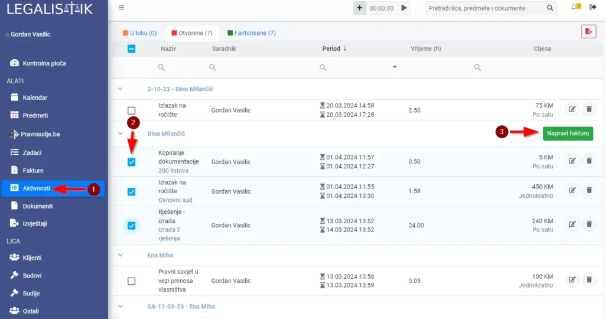
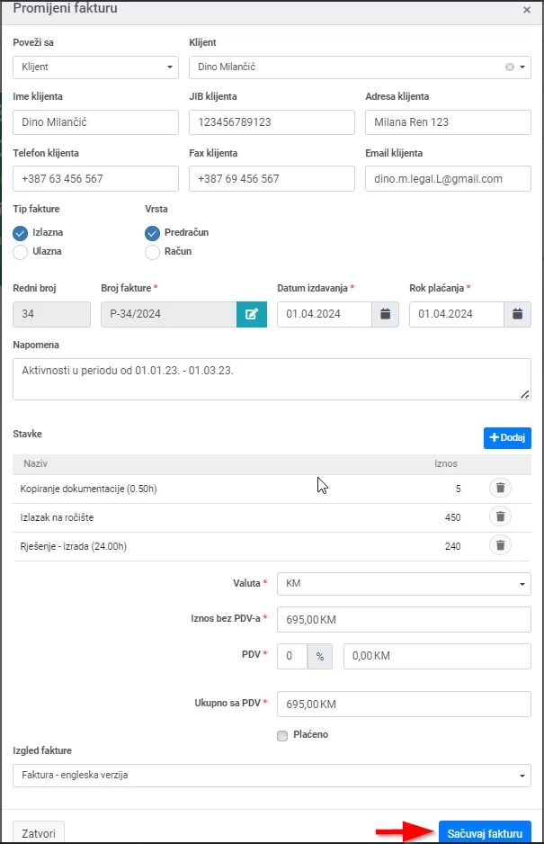
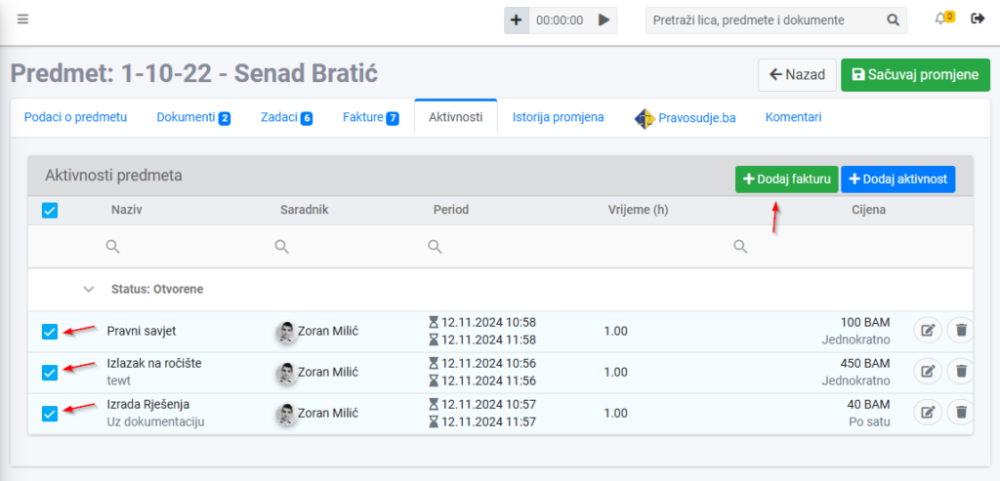

Iz modula Aktivnosti #
Nakon unosa aktivnosti vezanih za predmet, ili određenog klijenta, omogućeno je jednostavno generisanje fakture u koju će biti uključene sve željene aktivnosti kao usluge.
Sve što je potrebno uraditi je da se unutar modula Aktivnosti izaberu aktivnosti koje želite dodati u fakturu i kliknuti na dugme Napravi fakturu:

Otvoriće se novi prozor sa popunjenim svim podacima o predmetu ili klijentu i sa dodanim svim izabranim aktivnostima. Popunite ostala željena polja i kliknite na dugme Sačuvaj fakturu:

Iz predmeta #
Fakture sa unesenim aktivnostima (uslugama) možete generisati i unutar željenog predmeta, kartica Aktivnosti:

Dodajte potrebne aktivnosti, izaberite one koje želite dodati u fakturu i kliknite na dugme Dodaj fakturu.